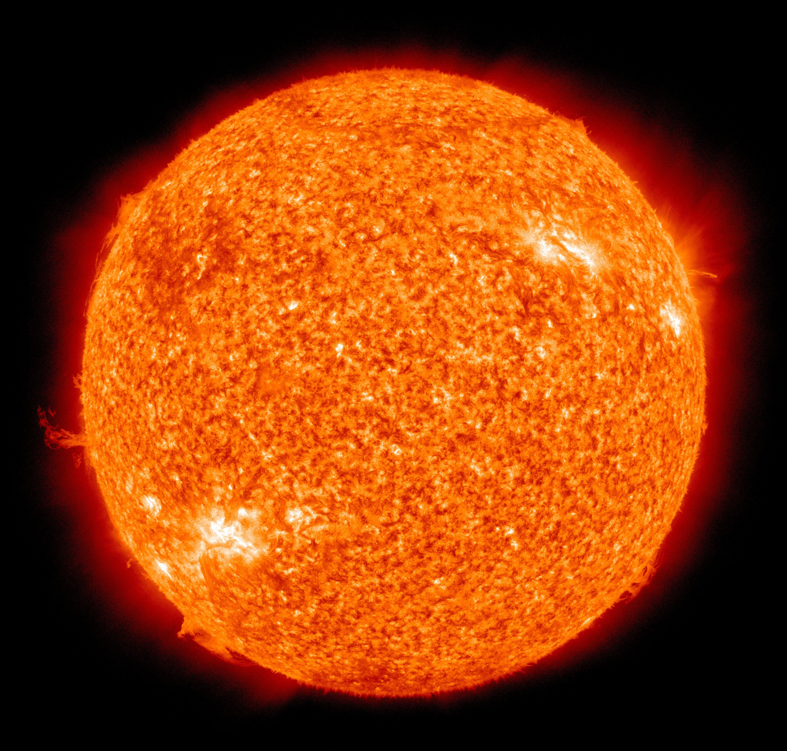
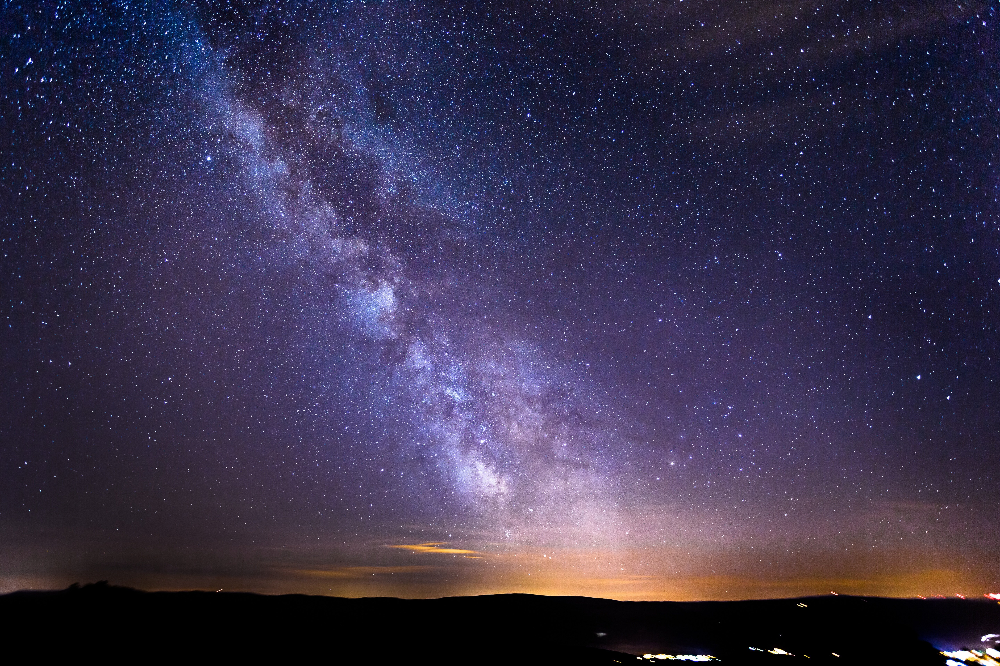

En astronomie, une étoile est un astre lumineux de plasma qui produit sa propre énergie grâce à des réactions de fusion nucléaire en son cœur.
Le cycle de vie d'une étoile
Une étoile naît au cœur de gigantesques nuages de gaz et de poussières appelés nébuleuses. Pendant la majeure partie de sa vie, elle brille en transformant l'hydrogène en hélium. En fin de vie, selon sa masse, elle peut finir en naine blanche (un cadavre d'étoile ultra dense et chaud), exploser en supernova, ou s'effondrer en trou noir .
Le Soleil : notre étoile
Le Soleil est l'étoile la plus proche de la Terre. C'est autour de lui que gravitent la Terre et toutes les planètes de notre Système Solaire.
Sans lui, la vie sur notre planète serait impossible : c'est sa chaleur qui permet de maintenir de l'eau à l'état liquide, et sa lumière qui fournit l'énergie nécessaire aux plantes pour vivre via la photosynthèse, constituant ainsi la base de toute la chaîne alimentaire.

Les milliards d'étoiles que l'on observe la nuit dans le ciel font toutes partie de notre galaxie : la Voie Lactée.

Image de la Voie Lactée